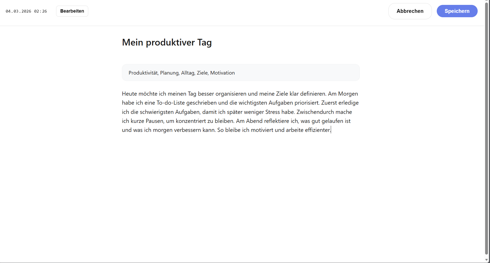
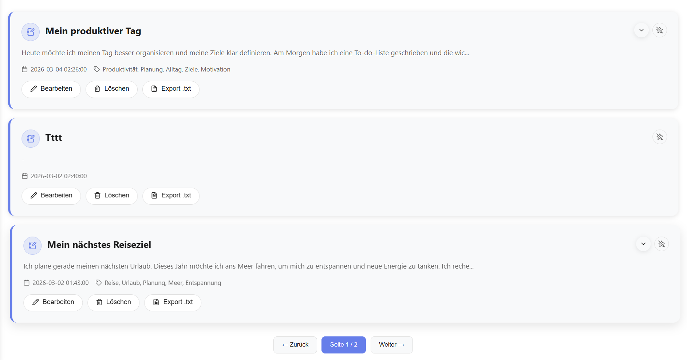
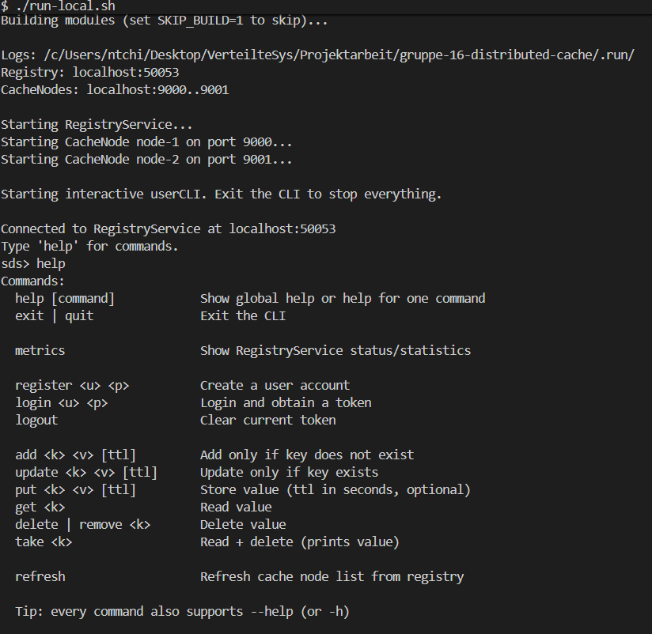
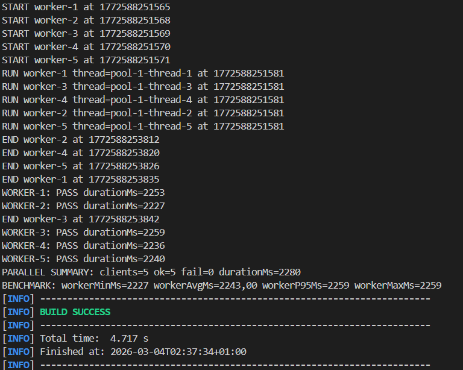
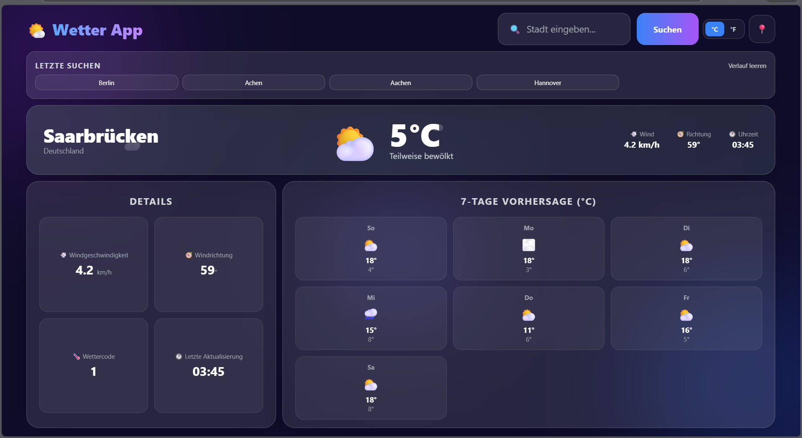
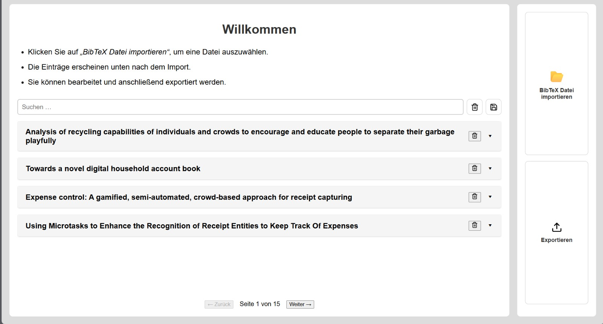
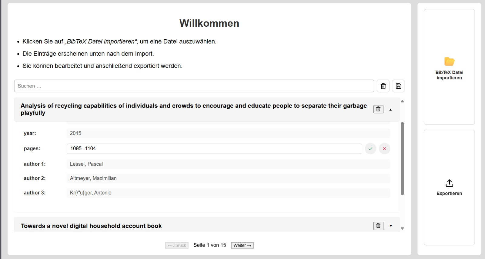

Fullstack Developer · HTW Saarbrücken
Informatikstudentin mit Leidenschaft für verteilte Systeme, saubere Architektur und intuitive Web-Erlebnisse. Von der CLI bis zum UI.
Ich bin Vanelle, Informatikstudentin im B.Sc. an der HTW Saarbrücken. Ursprünglich aus Kamerun — ich baue Dinge, die wirklich funktionieren, von verteilten Java-Systemen bis zu dreisprachigen React-Apps.
Mein Antrieb ist das vollständige Spektrum der Entwicklung: saubere Backend-Architektur, intuitive UIs und die unsichtbare Schicht dazwischen, die alles zusammenhält.
Bis zum 1. März 2026 war ich Werkstudentin bei Saar Metall GmbH, wo ich echte Anforderungen in produktionsreife Software übersetzt habe.


All-in-One Notizbuch-App mit Journal, Budget und Notizen. Fokus auf klare UX, mobile Darstellung und schnelle Bearbeitung mit Export-Funktionen.
.txt exportieren

Verteiltes Key-Value-Cache-System mit RegistryService, mehreren CacheNodes und interaktiver User-CLI. Kommunikation kombiniert REST (Verwaltung) und gRPC (Datenpfad).
register, login, logoutput, get, delete, take + optionales TTLsds> register van 123 REGISTER: success=true message=registered sds> login van 123 LOGIN: success=true message=ok Logged in. Token expires at epoch_ms=1772591765681 sds> put k1 v1 PUT: ok sds> get k1 GET: v1 sds> quit Stopping services... Stopped.
login noel 1234 create-list weekend add-item weekend milk add-item weekend bread search-item weekend milk delete-item weekend bread delete-list weekend
Reines Java-CLI Projekt ohne Frontend. Fokus auf robuste Kommando-Logik, Benutzerfluss und saubere Trennung zwischen Authentifizierung und Listen-Operationen.

Moderne Wetter-App mit aktueller Wetterlage und 7-Tage-Vorhersage. Die Anwendung kombiniert Stadtsuche, Geolokalisierung, Suchverlauf und Temperaturumschaltung in einem responsiven One-Screen-Layout.


Tool zum Importieren, Durchsuchen und Bearbeiten von BibTeX-Einträgen mit direktem Export. Ausgelegt auf schnelle Navigation auch bei vielen Datensätzen.
Großes Clustering-Projekt zur Gruppierung von Filmen auf Basis von keywords und overview. Vergleich mehrerer Algorithmen inklusive Visualisierung der Clusterstruktur.
Praxisprojekt im Unternehmenskontext mit Fokus auf Stabilität, nachvollziehbare Prozesse und enge Abstimmung mit realen Nutzeranforderungen.